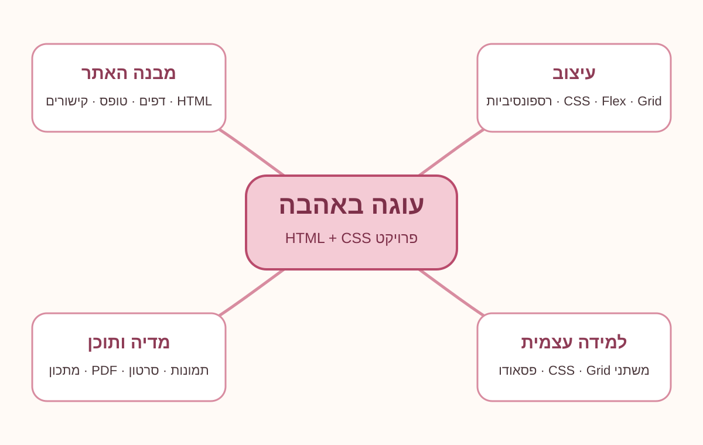
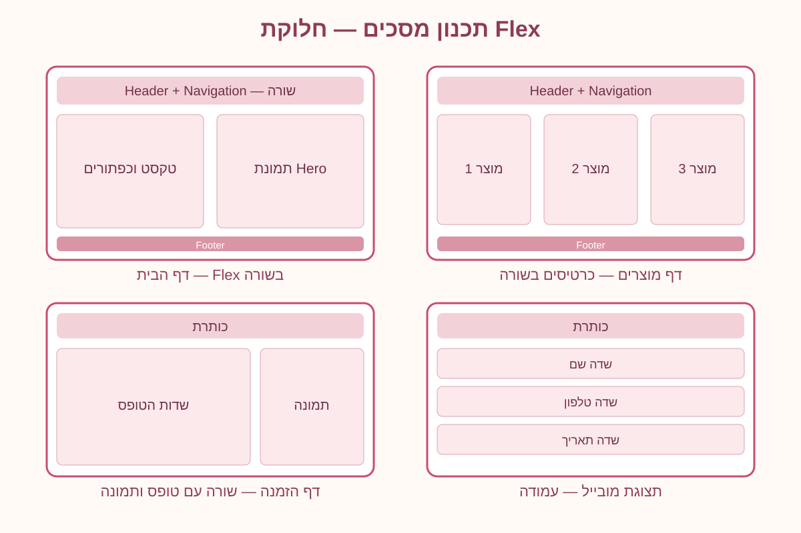

ספר פרויקט — עוגה באהבה
אתר לחנות עוגות וקינוחים | פרויקט סיכום HTML + CSS
נספח א׳ — מפת חשיבה
מפת החשיבה מציגה את הנושאים המרכזיים בפרויקט: מבנה האתר, עיצוב, מדיה ותוכן ולמידה עצמית.

נספח ב׳ — תכנון מסכים
התרשימים מתארים את חלוקת המסכים לשורות ולעמודות לפני בניית העיצוב. במחשב אזור הפתיחה מחולק לשני חלקים, כרטיסי המוצרים מוצגים בשורה, ובדף ההזמנה הטופס והתמונה מוצגים זה לצד זה. במסך צר הפריטים עוברים לעמודה כדי לשמור על קריאות.

הסבר על פריסת האתר באמצעות Flex
בפרויקט נעשה שימוש ב־Flexbox בכמה אזורים. Flex מאפשר לסדר פריטים לאורך ציר ראשי וליישר אותם ביחס לציר המשני.
- display: flex — הופך את האלמנט למכולת Flex ומאפשר לסדר את הילדים שלו בשורה או בעמודה. משמש למשל בכותרת העליונה, בתפריט, באזור היתרונות ובטופס.
- justify-content: space-between / center / space-around — קובע את פיזור הפריטים לאורך הציר הראשי. בכותרת הוא מרחיק בין הלוגו לתפריט; בכפתורים ובתפריט הוא ממרכז או מפזר פריטים.
- align-items: center / stretch — מיישר פריטים לאורך הציר המשני. משמש ליישור הלוגו והתפריט במרכז הגובה ולמתיחת כרטיסים לגובה אחיד.
- flex-wrap: wrap — מאפשר לפריטים לרדת לשורה נוספת כשאין מספיק רוחב. משמש בתפריט, בתגיות ובכפתורי הטופס.
- gap — קובע רווח אחיד בין פריטי Flex בלי להוסיף margin לכל פריט בנפרד.
- flex: 1 1 0 — מאפשר לפריטים לגדול ולהתחלק במקום הפנוי באופן שווה, למשל באזור שלושת היתרונות.
נושאים חדשים שנלמדו באופן עצמאי
1. משתני CSS
משתני CSS מוגדרים בתוך :root ומתחילים בשני מקפים, לדוגמה --rose: #c94d70;. משתמשים בהם באמצעות var(--rose). בפרויקט המשתנים משמשים לצבעי המותג, לרקע, לטקסט, לקווים ולצללים. כך ניתן לשנות צבע מרכזי במקום אחד ולעדכן את כל האתר באופן אחיד.
2. CSS Grid
Grid היא שיטת פריסה דו־ממדית שמאפשרת לשלוט בשורות ובעמודות. בפרויקט היא משמשת לסידור אזור הפתיחה וכרטיסי המוצרים. לדוגמה, grid-template-columns: repeat(3, minmax(0, 1fr)) מחלק את השטח לשלוש עמודות שוות, וב־Media Query מספר העמודות משתנה במסכים צרים.
3. פסאודו־אלמנטים ואפקטים
נוסף שימוש ב־::before ו־::after ליצירת קישוטים סביב כותרות בלי להוסיף תגיות HTML. שימוש ב־transform מזיז או מגדיל מעט כרטיס במעבר עכבר, ו־filter משפר בעדינות את הרוויה והניגודיות של תמונות.
4. התאמה רספונסיבית
Media Query מאפשר לשנות את הפריסה לפי רוחב המסך. בפרויקט כרטיסי המוצרים מוצגים בשלוש עמודות במחשב, בשתי עמודות בטאבלט ובעמודה אחת בטלפון. התמונות מקבלות גובה מותאם ו־object-fit: cover שומר על מראה אחיד בלי למתוח אותן.
קישורים מתקדמים
קישורי mailto: פותחים תוכנת דוא״ל, קישורי tel: מאפשרים להתקשר ממכשיר תומך, וקישור עם המאפיין download מציע הורדת קובץ במקום מעבר רגיל אליו. ניתן להשתמש בהם בדף יצירת קשר ובקישור לקטלוג.
5. תגית Audio ב־HTML
בדף אודות (pages/about.html) הוספנו את התגית <audio controls> ואת מקור הקובץ המקומי assets/media/baking-chime.wav. המאפיין controls מציג כפתורי הפעלה, עצירה ועוצמת קול, ו־preload="none" מונע טעינה מוקדמת של השמע לפני שהגולש מפעיל אותו. כך ניתן להציג קובץ שמע בלי להסתמך על אתר חיצוני.
6. קישורים מתקדמים
בדף יצירת קשר (pages/contact.html) נעשה שימוש ב־tel: לקישור טלפון וב־mailto: לפתיחת הודעת דוא״ל. בקישור לקטלוג ה־PDF נעשה שימוש במאפיין download כדי להציע הורדת קובץ.
7. התאמת תמונות
בקובץ css/style.css נעשה שימוש ב־object-fit: contain וב־max-width/max-height כדי לשמור על יחס התמונה ולהימנע מהגדלה מלאכותית של תמונות שמקורן קטן. תמונה קטנה שמוצגת מעבר לרזולוציה המקורית עלולה להיראות מטושטשת.
בדיקות לפני הגשה
- לפתוח את
index.htmlולבדוק שכל דפי האתר נפתחים. - לבדוק את טופס ההזמנה ואת דף האישור.
- לבדוק שהסרטון וה־PDF נפתחים מתוך התיקייה המקומית.
- לבדוק את האתר ברוחב מחשב ובטלפון.
- לצלם מסכי אמת של האתר המורץ לצורך ההגשה; התרשימים בנספח הם תכנון מסכים ולא צילומי מסך של האתר.
הערה חשובה: טופס ההזמנה בפרויקט הוא הדמיה לימודית של שליחה לדף אישור ואינו מחובר לשרת אמיתי. יש להתאים את מספר נושאי הלמידה העצמית לדרישה המדויקת של המורה; בהנחיות המקוריות מצוינים שני נושאים חדשים.